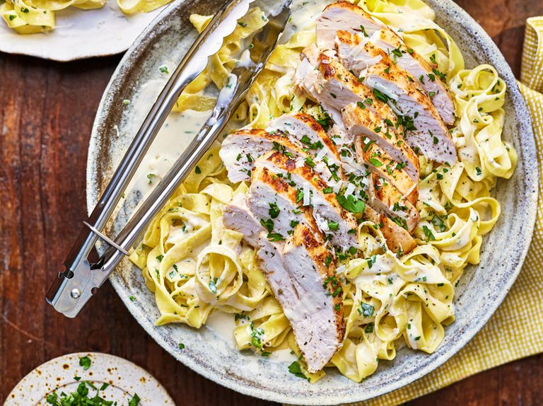
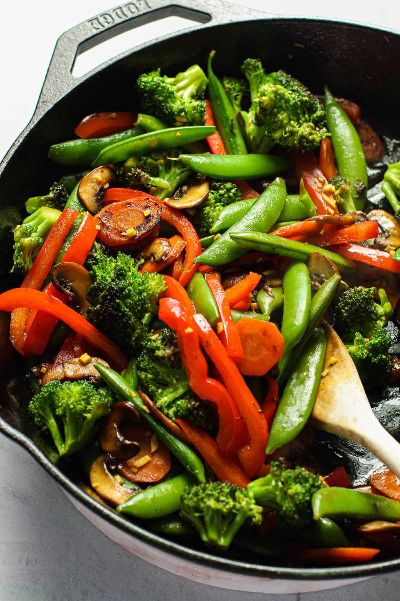
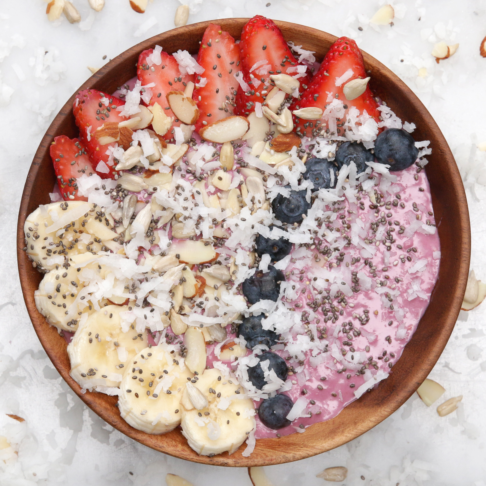

Recipe 1: Spaghetti Carbonara

A classic Italian pasta dish made with eggs, cheese, pancetta, and black pepper.
Ingredients:
- 200g spaghetti
- 100g pancetta or guanciale
- 2 large eggs
- 50g grated Parmesan cheese
- Salt and black pepper
Instructions:
1. Cook spaghetti in boiling salted water until al dente.
2. In a separate pan, fry pancetta until crispy.
3. In a bowl, whisk together eggs, grated Parmesan, salt, and pepper.
4. Drain spaghetti and toss in the pancetta fat. Remove from heat.
5. Add egg mixture to the spaghetti and toss quickly to coat.
6. Serve immediately with additional grated Parmesan and black pepper.
View DetailsRecipe 2: Grilled Chicken Alfredo
A savory twist on classic Chicken Alfredo pasta with grilled chicken and a rich Alfredo sauce.
Ingredients:
- 300g fettuccine pasta
- 2 boneless, skinless chicken breasts
- 1 cup heavy cream
- 1 cup grated Parmesan cheese
- 1/2 cup unsalted butter
- Salt and black pepper
Instructions:
1. Cook fettuccine pasta according to package instructions.
2. Season chicken breasts with salt and black pepper, then grill until fully cooked. Slice into strips.
3. In a saucepan, melt butter over medium heat. Add heavy cream and Parmesan cheese, stirring until smooth.
4. Season the Alfredo sauce with salt and black pepper to taste.
5. Combine cooked pasta, grilled chicken, and Alfredo sauce. Toss until well-coated.
6. Serve hot, garnished with additional Parmesan cheese.
View DetailsRecipe 3: Veggie Stir-Fry
A quick and healthy stir-fry with a variety of colorful vegetables and tofu.
Ingredients:
- 2 cups broccoli florets
- 1 red bell pepper, sliced
- 1 yellow bell pepper, sliced
- 1 carrot, julienned
- 200g firm tofu, cubed
- 3 tbsp soy sauce
- 1 tbsp sesame oil
Instructions:
1. In a wok or skillet, heat sesame oil over medium-high heat.
2. Add tofu and stir-fry until golden brown. Remove from the wok.
3. Stir-fry broccoli, bell peppers, and carrot until vegetables are tender-crisp.
4. Add cooked tofu back to the wok and pour soy sauce over the mixture. Toss to combine.
5. Serve over rice or noodles.
View DetailsRecipe 4: Margherita Pizza

A classic Margherita pizza with tomato sauce, fresh mozzarella, and basil.
Ingredients:
- 1 pizza dough
- 1/2 cup tomato sauce
- 200g fresh mozzarella, sliced
- Fresh basil leaves
- Olive oil
- Salt and black pepper
Instructions:
1. Preheat the oven to the highest setting (usually around 475°F or 245°C).
2. Roll out pizza dough on a floured surface and transfer it to a pizza stone or baking sheet.
3. Spread tomato sauce evenly over the dough, leaving a border for the crust.
4. Arrange fresh mozzarella slices on top of the sauce.
5. Bake in the preheated oven until the crust is golden and the cheese is melted and bubbly.
6. Remove from the oven, sprinkle with fresh basil leaves, and drizzle with olive oil.
View DetailsRecipe 5: Berry Smoothie Bowl
A refreshing and nutritious smoothie bowl topped with a variety of berries and granola.
Ingredients:
- 1 cup mixed berries (strawberries, blueberries, raspberries)
- 1 frozen banana
- 1/2 cup Greek yogurt
- 1/4 cup almond milk
- Granola
- Chia seeds
- Honey (optional)
Instructions:
1. In a blender, combine mixed berries, frozen banana, Greek yogurt, and almond milk.
2. Blend until smooth and creamy.
3. Pour the smoothie into a bowl and top with granola, chia seeds, and additional berries.
4. Drizzle with honey if desired.
View DetailsAbout Me
I'm Oswald and I just love these recipes. Enjoy!